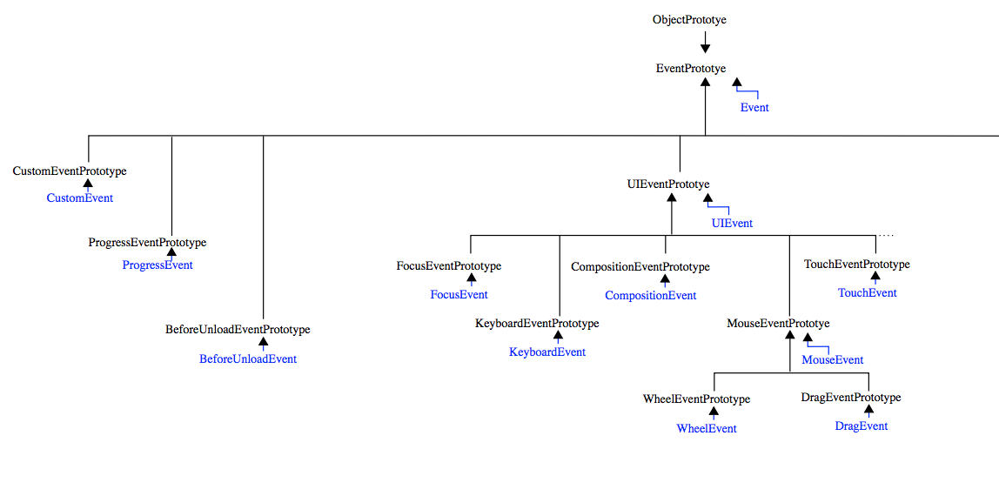

class: center, middle, inverse # Programmation Web: JavaScript [Johan Koitka](mailto:johan.koitka@univ-artois.fr) --- class: center, middle # 2. JavaScript côté client --- ## Introduction ### JavaScript côté client - Comment utiliser JavaScript dans un navigateur ? - Tout ce qui a été vu jusqu'à présent reste valide ! -- ### Principales technologies abordées - DOM (*Document Object Mode*) - Les événements - Quelques (?) API HTML5 --- ## Rappels (succincts) HTML -- ### HTML - *HyperText Markup Language* - Structuration de l'information - Règles d'affichage déléguées aux CSS - Versions actuelles : (x)HTML5 & CSS 3 - Validateur : [https://validator.w3.org/](https://validator.w3.org/) --- ### Les balises (tags) ```html <p title="un paragraphe">Ceci est un paragraphe</p> ``` ```html <link rel="stylesheet" type="text/css" href="style.css"> ``` ```xhtml <!-- xhtml version --> <link rel="stylesheet" type="text/css" href="style.css" /> ``` #### Liste des balises [http://www.w3schools.com/tags/](http://www.w3schools.com/tags/) (voir aussi [http://www.w3schools.com/tags/ref_byfunc.asp](http://www.w3schools.com/tags/ref_byfunc.asp)) --- ### Les attributs des balises - Permet de préciser le contenu des balises - Liste des attributs : [http://www.w3schools.com/tags/ref_standardattributes.asp](http://www.w3schools.com/tags/ref_standardattributes.asp ) #### Exemple ```html <img src="smiley.gif" alt="Smiley face" height="42" width="42"> ``` -- #### 2 attributs standards particuliers -- - `class` : détermine la classe de l'objet ```html <p class="alert"> Alerte ! </p> ``` - Ne s'applique pas qu'à `<div>` et `<span>` ! -- - `id` : ne peut apparaître qu'une seule fois dans toute la page ! --- ### Imbrication de balises ```html <p> Ceci est un texte <strong>fortement</strong> mis en valeur. </p> ``` ```html <p> imbrication <em> erronée </p> </em> ``` -- > **Règle:** > toutes les balises contenues doivent être fermées avant de fermer la balise contenante. > **Exception:** (html mais pas xhtml) > Les balises ne contenant pas de texte. > ex: `<br>`, `<link>`, `<img>`, etc. --- ### Un document est un arbre ```html <html> <head> <title> TITRE </title> </head> <body> <h1> titre 1 </h1> <div> <ol> <li> ligne 1</li> <li> ligne 2</li> </ol> </div> <div> <p> blabla </p> <ul> <li> ligne 1</li> <li> ligne 2</li> <li> ligne 3</li> </ul> </div> </body> </html> </input> ``` --- #### Arbre résultant --- ### Squelette HTML5 ```html <!doctype html> <html lang="fr"> <head> <meta charset="utf-8"> <title>Titre de la page</title> <link rel="stylesheet" href="style.css"> <script src="script.js"></script> </head> <body> <!-- Le reste du contenu --> </body> </html> ``` --- ## Incorporer du code JavaScript dans une page web #### Mode en ligne : la balise `<script>` ```html <script type="text/javascript"> < !-- le type par défaut est javascript --> alert('Bouh!'); </script> ``` -- rq : attention, en `xhtml`, les caractères `&` et `<`; sont utilisés : ```html <script><![CDATA[// Code Javascript ]]></script> ``` -- > Règle 1 : On sépare un maximum le code js du code HTML > > Règle 2 : On sépare les traitements des affichages (production d'HTML) -- #### Dans un fichier externe (*méthode préconisée*) ```html <script type="text/javascript" src="monscript.js"></script> ``` --- #### Dans un gestionnaire d'évènements HTML ```html <button onclick="alert('Bouh 2!');">Cliquez moi...</button> <img src="" alt="" onmouseover="alert('pousse toi de là !');"> ``` -- #### Dans une url ```html <a href="javascript:new Date().toLocaleTimeString();"> What time is it? </a> ``` --- ## L'objet `window` ### Présentation - C'est l'objet global JavaScript pour le navigateur - Il contient différentes propriétés (`location`, `document`, `history`, `screen`, `navigator`, `console`, etc.) - Il contient différentes méthodes (`alert`, `prompt`, `confirm`, `setTimeout`, `open`, etc.) - Doc : [https://developer.mozilla.org/en-US/docs/Web/API/Window](https://developer.mozilla.org/en-US/docs/Web/API/Window) -- ### Exemples ```javascript window.location = "http://my.website.net/"; // équivalent à location = "http://my.website.net/"; window.setTimeout(function() { window.alert("Bouh !"); }, 2000); history.back(); // window.history.go(-1); history.forward(); // window.history.go(1); console.log(navigator.userAgent); var geo = navigator.geolocation; ``` --- ## Modélisation de documents : DOM ### DOM - Document Object Model - Standard W3C ### Objectif - Représenter le document par des objets pour XML/HTML/SVG ### Historique - 1998 DOM1 - 2000 DOM2 - 2004 DOM3 - Work in progress : DOM4 (*Last Call Working Draft* publié en 2014) --- ### Opérations possibles - Sélectionner/trouver des éléments du document - Traverser le document vu comme un arbre - Positionner/trouver des attributs - Modifier le contenu du document - Modifier la structure du document - Traiter des formulaires - Traiter les évènements --- ### Modélisation de documents DOM: types de base #### Types de bases pour n'importe quel document - `Node` (le plus général) - `Element` - `NodeList` (liste de nœuds ≃ `Array` de `Node`) - `Document` #### Types de base pour un document HTML - `HTMLDocument` - `HTMLElement` - `HTMLCollection` ( ≃ `Array` de `HTMLElement`) Plus de détails: [https://developer.mozilla.org/en-US/docs/Web/API](https://developer.mozilla.org/en-US/docs/Web/API) --- ### Quelques attributs de `Node` - `parentNode`: _read only_, null si racine - `childNodes`: _read only_ - `firstChild`, lastChild: _read only_, pour avoir les enfants - `nextSibling`, `previousSibling`: pour avoir les nœuds frères/adjacents _read only_ - `nodeType`: _read only_ (`Node.TEXT_NODE === 3`, dans ce cas, il ne peut avoir de fils) - `nodeValue`: le contenu d'un nœud de type texte - `nodeName`: _read only_, le nom de la balise - `textContent`: renvoie la concaténation des attributs `textContent` de chaque nœud enfant (attention aux écrasements!) #### Remarque Dans un document HTML, on utilise l'objet `window.document` pour avoir accès à la racine du document --- ### Création, insertion et suppression de nœuds #### Création ```javascript var pNode = document.createElement("p"); var txtNode = document.createTextNode('Totor le Castor'); ``` **rq:** createElement est sensible à la casse uniquement dans un document `XML` (et donc `xhtml` !) -- #### Insertion ```javascript var body = document.body; var h1Node = document.createElement('h1'); body.appendChild(pNode); pNode.appendChild(txtNode); body.insertBefore(h1Node, pNode); // insert un titre h1 avant le paragraphe // utilise Node.isEqualNode(node) ``` --- #### Suppression - `pNode.removeChild(txtNode)`; **rq**: on peut toujours utiliser : `n.parentNode.removeChild(n);` #### Remplacement - `Node.replaceChild(n1, n2)` : remplace n1 par n2 -- #### Fragment de document - C'est un container pouvant contenir un ensemble de nœuds - C'est un arbre lui même que l'on peut ensuite insérer où l'on veut ```javascript var frag = document.createDocumentFragment(); ``` --- ### Le cas des pages HTML: `HTMLElement` #### L'objet `HTMLElement` - Objets définis par la DOM HTML - Hérite de `Element` qui lui-même hérite de `Node` - Ignore les nœuds textes et commentaires - Il hérite également de `EventTarget`, et implémente les méthodes de `ParentNode`, `ChildNode`, `NonDocumentTypeChildNode`, et `Animatable` --- ### Quelques propriétés de `Element`/`HTMLElement` - `id` : une `DOMString` (c.a.d. une chaîne UTF16, cad une `String` en js) représentant l'`id` de l'élément - `attributes` (_read only_) : une `NamedNodeMap` contenant l'ensemble des attributs - `classList` (_read only_) : `DOMTokenList` des classes de l'élément - `className`: la classe de l'élément -- - `tagName` (_read only_) : une chaîne de caractère contenant le nom de la balise -- - `children` (_read only_) : une `HTMLCollection` (array-like) des éléments fils - `firstElementChild`/`LastElementChild` (_read only_) : premier/dernier fils - `nextElementSibling`/`previousElementSibling` (_read only_) : prochain/précédent frère -- - `textContent`: (from `Node`) le contenu textuel de l'élément et de ses descendants --- ### D'autres propriétés de `Element`/`HTMLElement` - `innerHTML` : une `DOMString` contenant le code HTML de ce qui est contenu dans l'élément - `outerHTML` : idem, avec le code de l'HTML lui-même -- #### Remarque `innerHTML` est relativement peu performant à l'utilisation, en particulier avec un `+=` (sérialisation + interprétation) (on préfèrera si possible accéder directement à `textContent` ou utiliser `insertAdjacentHTML`) --- ### Quelques méthodes de `Element`/`HTMLElement` - `hasAttribute(name)` : renvoie vrai si l'élément contient l'attribut `name`, faux sinon - `getAttribute(name)` : renvoie la valeur de l'attribut `name` - `removeAttribute(name)` - `setAttribute(name, value)` -- - `getElementById(name)` : renvoie le nœud ayant pour `id` `name` - `getElementsByClassName(names)` : renvoie une `HTMLCollection` contenant les fils correspondant aux classes indiquées - `getElementsByTagName(name)` : renvoie une `HTMLCollection` contenant les fils correspondant au nom indiqué -- (*NB:* pour ces 2 séries: idem avec NS pour namespace) -- - `addEventListener()` - `removeEventListener()` - `dispatchEvent()` --- ### Une dernière méthode pour la route ```javascript element.insertAdjacentHTML(position, html); // insert et interprète le code à la position désirée // à choisir parmi: beforebegin afterbegin beforeend afterend ``` #### Position `beforebegin` **`<tag>`** `afterbegin` *`contenu`* `beforeend` **`</tag>`** `afterend` *Remarque:* Beaucoup plus rapide que `innerHTML` --- ### Pour résumer : trouver un élément dans la page web -- #### Trouver un élément d'après son id ```javascript var section = document.getElementById('section1'); ``` -- #### Trouver un élément d'après son nom (`HTMLDocument` uniquement) ```javascript var radio = document.getElementsByName('couleur_choisie'); ``` -- #### Trouver un élément par type de balise ```javascript var paragraphes = document.getElementsByTagName('p'); ``` -- ##### Trouver un élément en utilisant les sélecteurs CSS - HTML5 : `getElementsByClassName()` - Jquery : `$()` --- ## Exercice ### Tables de multiplication - Écrire une page HTML avec la table de multiplication de 0 à 10. - Écrire la même chose à l'aide d'une fonction javascript. - Insérer le code dans une page HTML. - Généraliser la précédente fonction pour avoir un début, une fin et un pas quelconques. - Généraliser pour n'importe quelle fonction et non plus seulement pour l'addition. - Afficher sur une même page : - la table de multiplication de 0 à 10, - la table d'addition de 0 à 10, - la table de concaténation de 1 à 9, - la table de vérité du xor bit à bit à 2 entrées. --- ## Modifier les styles -- ### Rappels CSS * Cascading Style Sheets * déterminent l'affichage du texte structuré ### Objectif * modifier les styles dynamiquement ### Solutions en js * modifier l'attribut style d'une balise donnée * changer sa classe * modifier directement les feuilles de style --- ### Rappels CSS #### Format d'une règle -- #### Plusieurs déclarations ```css p.alert {color: red; font-size: 12px; font-weight: bold} ``` #### Plusieurs sélecteurs ```css h1#main, h2, h3 {color: blue; font-style: italic} ``` ####Plusieurs règles et 1 même sélecteur ```css h1, h2 {color: blue; font-weight: bold} h2 {font-style: italic} ``` --- ### Modifier les styles en js -- #### Modifier l'attribut style d'une balise donnée ```javascript ex = document.getElementById('exemple'); ex.style.fontSize = '24pt'; // !!! pas font-size !!! ex.style.color = 'blue'; ex.style.backgroundColor = '#FF0000'; // !!! pas background-color !!! ``` -- #### Fonctions setAttribute/getAttribute ```javascript ex.setAttribute('style', '{color: blue; background-color: #FF0000}'); s = ex.getAttribute(style); console.log(s); ``` -- #### Utilisation de cssText (_Read/Write_) ```javascript ex.style.cssText = '{color: blue; background-color: #FF0000}'; ``` --- #### Modifier la classe ```css /* CSS */ *.alert {color: red; text-transform: uppercase;} ``` ```js /* js */ ex = document.getElementById('exemple'); ex.className = 'alert'; ``` -- ##### Note * les espaces permettent d'assigner plusieurs classes * depuis HTML5, on peut utiliser le champ `classList` qui contient une `DOMTokenList` (_rw_) --- #### Utilisation de la propriété `document.styleSheets` C'est un tableau contenant les feuilles de style associées au document (_read only_) -- #### Activation/désactivation ```javascript document.styleSheets[0].disabled = true ; // désactive la CSS n°0 document.styleSheets[1].disabled = false; // active la CSS n°1 ``` -- #### Insertion/suppression et lecture de règle ```javascript var rules = document.styleSheets[0].cssRules; // tableau des règles de la CSS n°0 document.styleSheets[0].insertRule('.alert {color:red}', 0); document.styleSheets[0].deleteRule(0); ``` --- ## Les événements -- ### Principes et exemples ### Gérer les événements ### Traiter des formulaires ### Propagation des événements --- ## Les événements ### Principe * côté client, javascript permet la _programmation événementielle asynchrone_ (plusieurs événements peuvent être traités en "parallèle") * un gestionnaire d'événement (`EventListener`) attend le déclenchement d'un événement et lance le traitement adéquat ### Exemple d'événements * `window` : `load`, `resize`, … * DOM : `DOMContentLoaded`, `click`, `change`, `mouseover`, `keypress`, … * HTML 5 : * drag and drop : `dragstart`, `dragenter`, `drag`, … * balise `<video>` : `play`, `pause`, `volumechange`, … * … --- ## Les événements : principes ### Un écouteur EventType → Action L'écouteur (_listener_) attend un évènement, si celui-ci arrive, il déclenche (_trigger_) une action --- ### Hiérarchie des événements  --- ### Un exemple simpliste ```html <!DOCTYPE html> <html> <head> <title>Events: demo 1</title> <meta charset="utf-8" /> </head> <body> <button onclick="getElementById('demo').textContent = Date();"> Quel jour sommes-nous ? </button> <p id="demo">Démo </p> </body> </html> ``` -- <iframe src="html/button.html" width="400" height="225"> button example </iframe> --- ### Les événements : gestion des écouteurs #### Intégration directement à l'intérieur des balises ```html <button onclick="getElementById('demo').textContent=Date();"> ``` -- #### Bonnes pratiques : * éviter à tout prix de mélanger le code HTML et le code JavaScript mettre le js dans un fichier séparé --- ### Intégration directement dans les propriétés des objets DOM * `HTMLElement` (tout comme Document et Window) hérite de `GlobalEventHandlers` et de `TouchEventHandlers` * Quelques propriétés/évènements accessibles : `onabort`, `onerror`, `onfocus`, `oncancel`, `onchange`, `onclick`, `onclose`, `oncontextmenu`, `oninput`, `onkeypress`, `onkeyup`, `onload`, `onmouseenter`, `onmouseleave`, `onscroll`, ... --- ### Exemple (fichier .js à inclure) ```javascript var computeColor = function (c) { if (c === 'red') { return 'blue'; } else { return 'red'; } }; var myMain = function () { var p = document.getElementById('demo'); p.onclick = function () { p.style.backgroundColor = computeColor(p.style.backgroundColor); }; }; // window.onload = myMain; // avant... document.addEventListener("DOMContentLoaded", myMain, false); // HTML5 ``` -- <iframe src="html/event.html" width="400" height="225"> event example </iframe> --- ## Les formulaires ### Balises formulaire cf. [http://www.w3schools.com/html/html_form_elements.asp](http://www.w3schools.com/html/html_form_elements.asp) * HTML : `<form>`, `<input>`, `<select>` (et `<option>` et `<optgroup>`), `<textarea`>, `<button`>, `<label`>, `<fieldset`> (et `<legend`>) * HTML 5 : `<datalist>` (et `<option>` et `<optgroup>`), `<keygen`>, `<output`> * Input types http://www.w3schools.com/html/html_form_input_types.asp * HTML : `text`, `password`, `submit`, `radio`, `checkbox`, `button` * HTML 5 : `color`, `date`, `datetime`, `datetime-local`, `email`, `month`, `number`, `range`, `search`, `tel`, `time`, `url`, `week` ### Plus de détails cf. [pdf](pdf/formulaires.pdf) --- ##Les évènements : gestion avancée des écouteurs ### Utilisation de `addEventListener` et `removeEventListener` * `element.addEventListener(type, listener, useCapture);` * `element.removeEventListener(type, listener);` * `type` : chaîne de caractères représentant le type d'événement (ex : `'click'` mais pas `'onclick'` !) * `listener` : l'objet qui recevra une notification lorsqu'un évènement du type spécifié se produit. Il doit s'agir d'un objet implémentant l'interface `EventListener`, ou simplement une fonction JavaScript. * `useCapture` : * `true` – la propagation est en mode capturing * `false` – la propagation est en mode bubble --- ## Les événements : propagation ### Event Bubbling vs. Event Capturing * Mode _bubbling_ : les événements se propagent de l'élément le plus emboité au moins emboîté ("du `<p>` vers le `<div>`") * Mode _capturing_ : c'est l'inverse -- #### Exemple ```html <div onclick="alert('coucou1');"> <p onclick="alert('coucou2');"> coucou </p> </div> ``` <iframe src="html/event2.html" width="300" height="168.75"> event example 2 </iframe> --- ### Plusieurs gestionnaires pour un seul élément On peut associer plusieurs actions grace à addEventListener ```javascript document.getElementById("id12") .addEventListener("click", function () {alert("coucou1");}, true); document.getElementById("id12") .addEventListener("click", function () {alert("coucou2");}, true); ``` <iframe src="html/event3.html" width="400" height="225"> event example 3 </iframe> --- ### Gestionnaires et actions par défaut * Sur un envoi de formulaire ('`submit`'), par défaut le navigateur recharge la page actuelle -- * Pour éviter cela (version '`onsubmit`') ```javascript function maFonction () { ... return false; } form.onsubmit = maFonction; ``` -- * Pour éviter cela (version '`addEventListener`') ```javascript function maFonction(event) { … event.preventDefault(); event.stopPropagation(); // inutile ici, mais permet de stopper la propagation d'événements } form.addEventListener('submit', maFonction, false ); ``` -- ## Tout sur `Event`: [https://developer.mozilla.org/en/docs/Web/API/Event](https://developer.mozilla.org/en/docs/Web/API/Event)